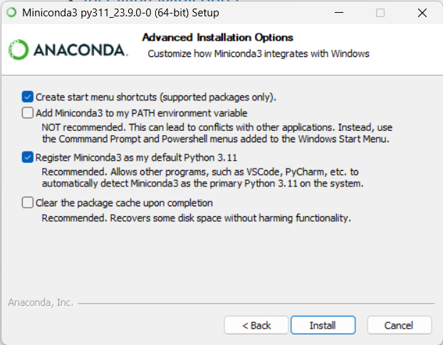
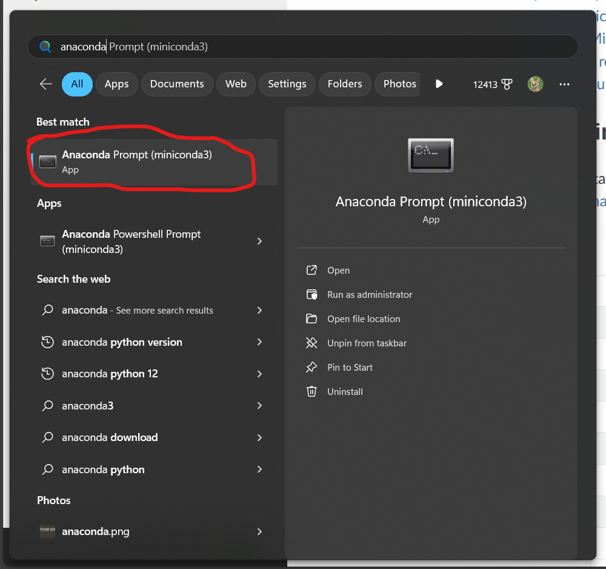
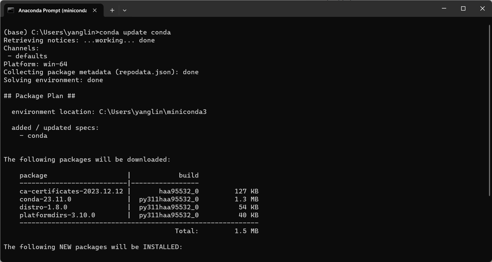
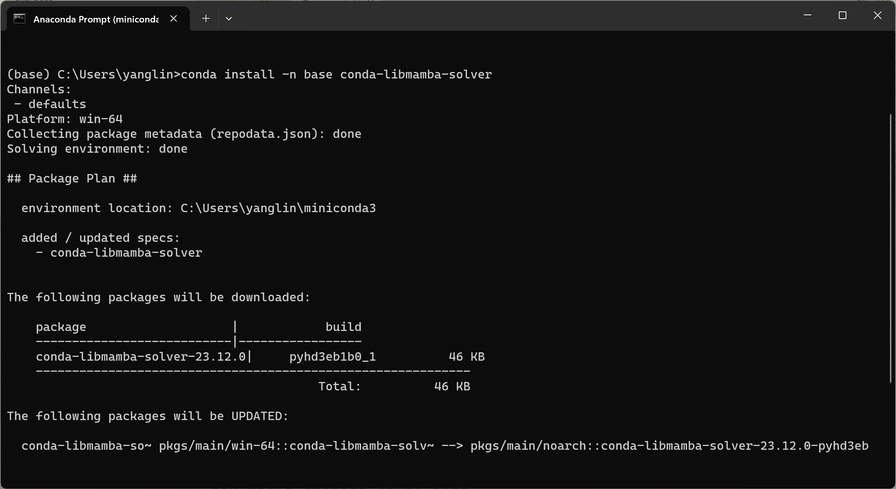
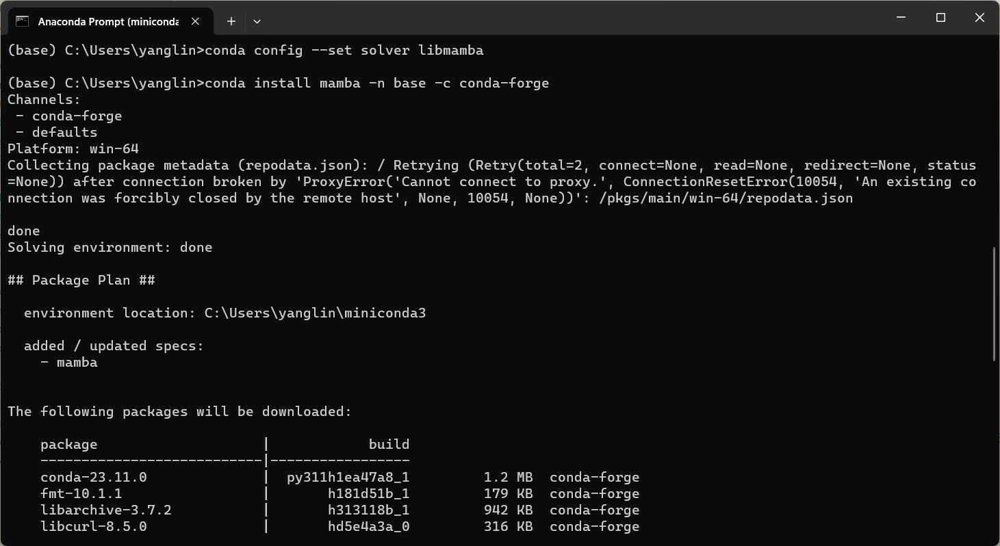
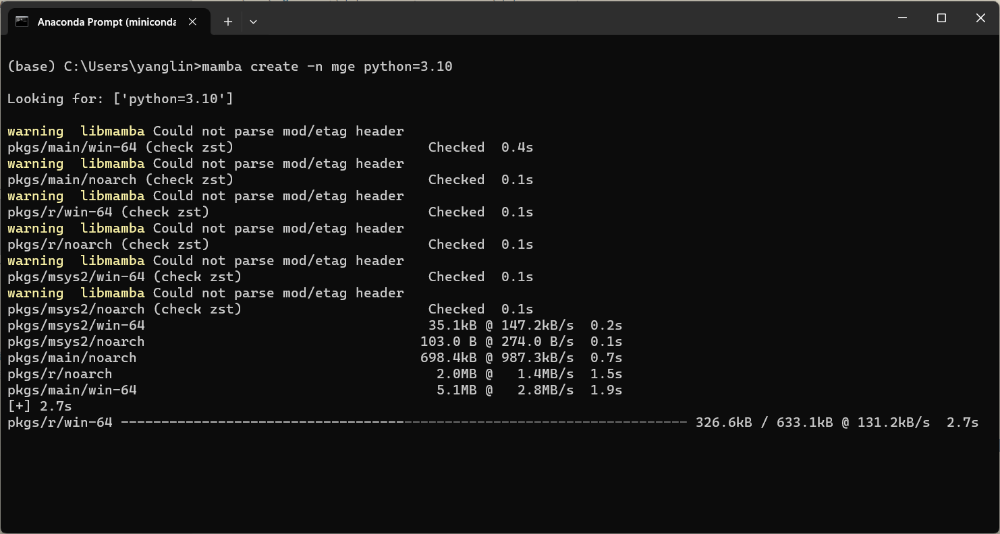
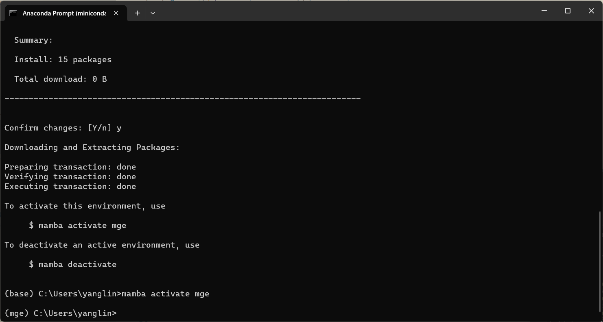
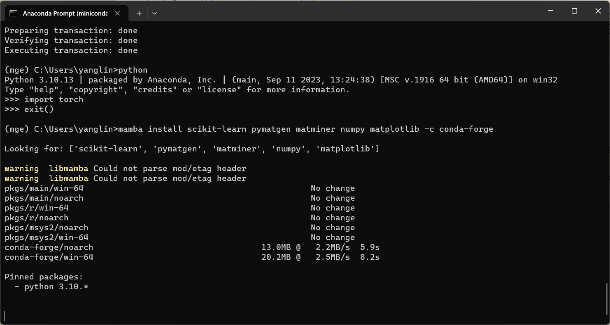
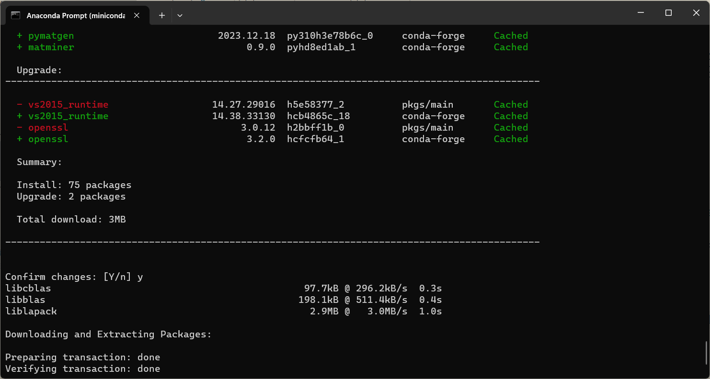
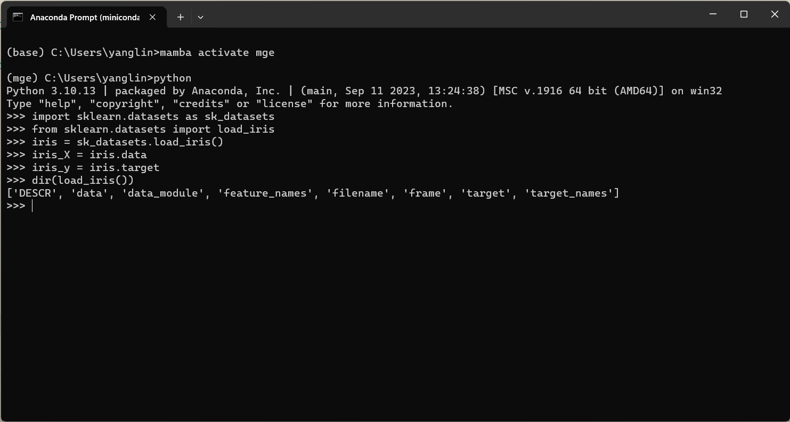

ENV: Environment Setup
Conda Setup
Conda is an open-source, cross-platform, language-agnostic package manager and environment management system. It was originally developed to solve difficult package management challenges faced by Python data scientists, and today is a popular package manager for Python and R. To (efficiently) use Python, the first thing we need to do is to install (mini)conda, by simply downloading the latest miniconda installer, clicking “next”, until you see and check the “Register Miniconda3 as my default Python 3.11” option in the “Advanced Installation Options” step.

Mamba Setup
Mamba is a fast(er), robust(er), and cross-platform package manager, (compared to conda), we use mamba to solve the strange dependency problems in our Maching Learning system:
To setup and use Conda/Mamba, the “Anaconda prompt” app should be called.

Update conda
conda update conda

Install and setup Mamba-solver
conda install -n base conda-libmamba-solver
conda config --set solver libmamba
conda install mamba -n base -c conda-forge

in the last step you may wait a long time and see a lot updates, that’s normal.

New Environment Setup
To create an isolated environment, with a name, say, “mge” (for materials genome engineering) based on python version 3.10, the command is
mamba create -n mge python=3.10

Then we need to activate the “mge” environment
mamba activate mge

Noticed that the prefix braket has been changed to “(mge)”.
Then we just need to follow the matminer, pymatgen, scikit-learn, pytorch instructions to install them.
Since pytorch has the most complex dependencies and is not in the same repository, we postpone the setup for pytorch at this moment.
The other packages can be installed together (BTW, the mamba install package_name -c blahblah command means from ‘blahblah’ repository we install the package.):
mamba install scikit-learn pymatgen matminer numpy scipy matplotlib -c conda-forge

during the installation you may see alerts in red, that’s package “conflict” and mamba is solving it.

You may want to check your package is working properly by input some test command, e.g., the 十分钟|通过sklearn上手你的第一个机器学习实例,
import sklearn.datasets as sk_datasets
from sklearn.datasets import load_iris
iris = sk_datasets.load_iris()
iris_X = iris.data
iris_y = iris.target
dir(load_iris())
And you may see the “iris-database”:
